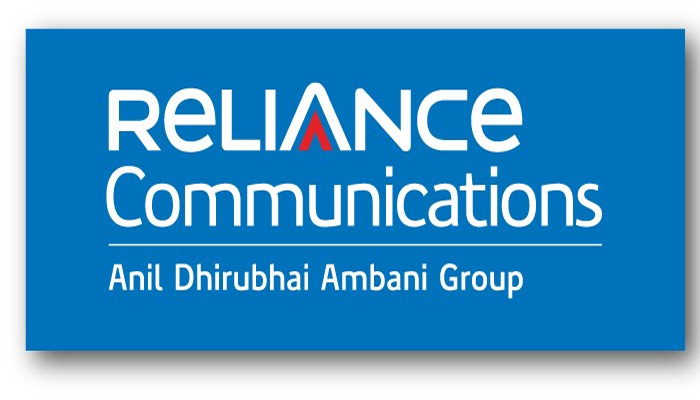

Responsibilities include maintaining server status, creating tickets (Service-Now) and University Customer Support
Maintaining website, generated and revised webpages, fixed links, modifying layout content for better user experience
Worked on third party API’s like YouTube, Facebook, Twitter, Google Calendar
Stay up to date on the amazing pace of latest browser technologies and make sure the site and its products are always mobile-friendly and multi-platform ready
Web Developer
Web Developer
Sep 2014- July 2015
7th Sense, Mumbai, India
Worked with a team to create a branding website(front-end) for premium Second homes
Developed site content and graphics by coordinating with copywriters and graphic designers; designing images for Designer Brand
Created and implemented a custom CSS grid system, with CSS media queries for mobile responsiveness
Programmed HTML5 canvases to animate particles on web backgrounds for site-wide promotions
Used NodeJs, JavaScript, AngularJS, jQuery, for building modules, websites and packages
Designed and Developed hybrid software application using third party APIs and cutting edge technologies
Conceptualized and developed websites for minor businesses using Content Management system, Javascript and HTML5
Assistant Manager

Assistant Manager
Jan 2012- Sep 2014
Reliance Communication Limited, Navi Mumbai, India
Handled Nagra-Kudelski software encryption system (UNIX OS and Oracle Database) and CAS for ensuring encryption of all Pay TV services, user rights management and authentication
Implemented Google calendar synchronization with live web application for events using Google Calendar API
Diagnosed deployment issues and post production issues and focused on both front-end and back-end
Black Box Testing, Soak Testing, User acceptance Testing, OTA testing
Worked with a team of developer and content-designer to launch interactive applications